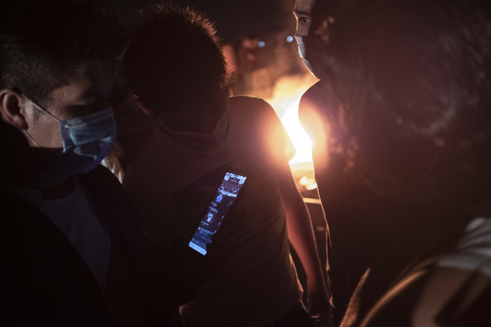

¿Cómo podemos cuidar nuestro activismo?
Entérate cómo revisando los consejos que hemos recopilado para ti
EN LAS REDES

Durante un contexto de protesta suelen surgir varias alertas alrededor de la seguridad digital de las personas que realizan activismo o comienzan a ir a las protestas. A raíz de este tipo de contexto hemos podido identificar 5 tipos de acciones que son consideradas amenazantes hacia activistas:
- 1. MONITOREO DE ACTIVIDAD EN REDES SOCIALES
- 2. INFILTRACIÓN EN CANALES DE COMUNICACIÓN
- 3. INTERCEPTACIÓN DE CANALES DE COMUNICACIÓN
- 4. OBTENCIÓN O FILTRACIÓN DE DATOS PERSONALES
- 5. INFORMACIÓN FALSA Y DESPRESTIGIO